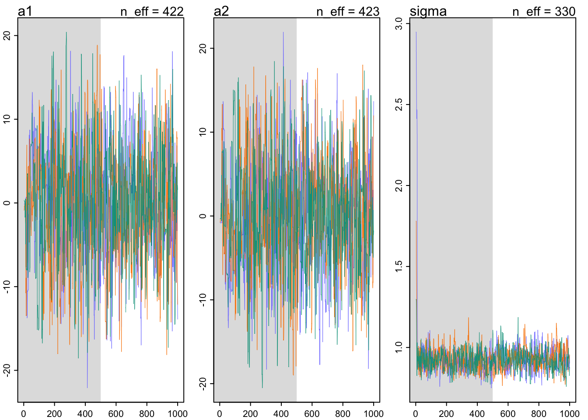

Chapter 9 Markov Chain Monte Carlo
9.1 Good King Markov and his island kingdom
Ring of 10 islands increasing in size and population as you go around the ring.
How do we visit each in proportion to population without too much time at see?
Metropolis Algorithm
- flip a coin each week to decide stay or leave
- Heads - consider clockwise ; Tails - Counterclockwise ; proposal
- Count seashells proportionate to proposal population. Count stones of current island.
- If seashells > stones then go to proposal. If stones > seashells then discard stones equal to the number of seashells and mix remaining seashells and stones together. If he draws a seashell then move to proposal. If he draws a stone, stays for a week. This draw probability of moving is equal to seashells / stones.
In code:
num_weeks <- 1e5
positions <- rep(0, num_weeks)
current <- 10
for(i in 1:num_weeks){
#record current island
positions[i] <- current
#flip a coin
proposal <- current + sample(c(-1,1), size = 1)
#link the loop between 10 and 1
if(proposal < 1) proposal <- 10
if(proposal > 10) proposal <- 1
# move ?
prob_move <- proposal/current
current <- ifelse(runif(1) < prob_move, proposal, current)
}Visualized:
par(mfrow = c(1,2))
plot(1:100, positions[1:100], col = rangi2, xlab = "week", ylab = "island")
plot(table(positions), col = rangi2, xlab = "island", ylab = "# of weeks")9.2 Metropolis algorithims
We can equate the King Markov example to estimating a posterior probability distribution.
- Islands are like parameters that can take on any value
- Population sizes are like posterior probabilities at each parameter value
- Weeks are like the samples from the joint posterior between the parameters
9.2.1 Gibbs sampling
Gibbs sampling uses adaptive proposals that adjusts proposed parameter values in an intelligent manner. It does this by using conjugate pairs of prior distributions and likelihoods.
9.2.2 High-dimensional problems
Gibbs can get stuck in small regions of the posterior in models with thousands of parameters or highly correlated parameters.
This arises from the Concentration of measure. Basically the mode is not the most likely to be sampled.
d <- c(1, 10, 100, 1000)
concentration_sim <- function(D, T = 1e3){
Y <- rmvnorm(T, rep(0, D), diag(D))
rad_dist <- function(Y) sqrt(sum(Y^2))
Rd <- sapply(1:T, function(i) rad_dist(Y[i,]))
}
Rd_a <- lapply(d, concentration_sim)
Rd_b <- unlist(Rd_a)
dens(Rd_b)
text(5, 0.10, "1 & 10")
text(11, 0.10, "100")
text(33, 0.10, "1000")9.3 Hamiltonian Monte Carlo
9.3.1 Another parable
King Monty is Markov’s cousin on the mainland. Monty’s kingdom lays in a narrow valley that runs North-south. The population is inversely related to elevation with most in the bottom of the valley and fewer on the mountainsides. King Monty picks a random direction and takes off with a random momentum. It will travel up and down as far as the momentum will carry it in a determined amount of time. When the time is reached, they stop. They then repeat. This removes any autocorrelation between neighbours. This is the basis of HMC
9.3.2 Particles in space
If King Monty’s vehicle was like a marble that contained the current parameter values, and the parameter space was a bowl, HMC would be like randomly flicking the marble in the bowl and taking a new position sample at a random amount of time has passed. The marble must follow laws of physics and so too does HMC.
Suppose there are 100 \(x\) values and 100 \(y\) values all sampled from Normal(0, 1).
\[x_{i} \sim \text{Normal}(\mu_{x}, 1)\\ y_{i} \sim \text{Normal}(\mu_{y}, 1)\\ \mu_{x} \sim \text{Normal}(0, 0.5)\\ \mu_{y} \sim \text{Normal}(0, 0.5)\]
Computing the log-probability of parameters and data: \[\sum_{i}\text{log}p(y_{i}|\mu_{y}, 1) + \sum_{i}\text{log}p(x_{i}|\mu_{x}, 1) + \text{log}p(\mu_{y}|0, 0.5) + \text{log}p(\mu_{x}|0, 0.5)\]
Compute the gradient or slope in all directions from current position (same for \(y\)): \[\frac{\partial M}{\partial\mu_{x}}=\frac{\partial\text{log}N(x|\mu_{x},1)}{\partial\mu_{x}}+\frac{\partial\text{log}N(\mu_{x}|0, 0.5)}{\partial\mu_{x}}=\sum_{i}\frac{x_{i}-\mu_{x}}{1^2}+\frac{0-\mu_{x}}{0.5^2}\]
Set leapfrog steps and step size. This is largely done for you. If the leapfrog steps and step size were to be the right combination you could run into U turns where the samples look a lot like the starting position. This is avoided in newer samplers with a no-U-Turn Sampler or NUTS.
Write out HMC in raw code here**
9.3.3 Limitations
As always, there are some limitations. HMC requires continuous parameters. It can’t glide through a discrete parameter. In practice, this means that certain techniques, like the imputation of discrete missing data, have to be done differently with HMC. HMC can certainly sample from such models, often much more efficiently than a Gibbs sampler could. But you have to change how you code them. (p. 278)
9.4 Easy HMC: ulam (brm)
Revisiting the African ruggedness example from the last chapter.
data(rugged)
d <- rugged
d$log_gdp <- log(d$rgdppc_2000)
dd <- d[complete.cases(d$rgdppc_2000),]
dd$log_gdp_std <- dd$log_gdp / mean(dd$log_gdp)
dd$rugged_std <- dd$rugged / max(dd$rugged)
dd$cid <- ifelse(dd$cont_africa == 1, 1, 2)The old way:
m8.3 <- quap(
alist(
log_gdp_std ~ dnorm(mu, sigma),
mu <- a[cid] + b[cid]*(rugged_std - 0.215),
a[cid] ~ dnorm(1, 0.1),
b[cid] ~ dnorm(0, 0.3),
sigma ~ dexp(1)
), data = dd
)
precis(m8.3, depth = 2)## mean sd 5.5% 94.5%
## a[1] 0.8865703 0.015675587 0.86151766 0.91162289
## a[2] 1.0505696 0.009936529 1.03468907 1.06645006
## b[1] 0.1324943 0.074203905 0.01390215 0.25108650
## b[2] -0.1425928 0.054748970 -0.23009225 -0.05509339
## sigma 0.1094933 0.005935183 0.10000769 0.118978829.4.1 Preperation
Things to do before using HMC:
1. Preprocess any variable transformations. You don’t want to waste computing power by having these transformations in your model.
2. create a trimmed data frame of only parameters of interest. Also, remove NA values.
Create a slim list:
dat_slim <- list(
log_gdp_std = dd$log_gdp_std,
rugged_std = dd$rugged_std,
mean_rugged_std = mean(dd$rugged_std),
cid = as.integer(dd$cid)
)
str(dat_slim)## List of 4
## $ log_gdp_std : num [1:170] 0.88 0.965 1.166 1.104 0.915 ...
## $ rugged_std : num [1:170] 0.138 0.553 0.124 0.125 0.433 ...
## $ mean_rugged_std: num 0.215
## $ cid : int [1:170] 1 2 2 2 2 2 2 2 2 1 ...9.4.2 Sampling from the posterior
m9.1 <- ulam(
alist(
log_gdp_std ~ dnorm(mu, sigma),
mu <- a[cid] + b[cid]*(rugged_std - 0.215),
a[cid] ~ dnorm(1, 0.1),
b[cid] ~ dnorm(0, 0.3),
sigma ~ dexp(1)
), data = dat_slim, chains = 1
)## Warning in '/var/folders/mm/1f07t6b52_5cp3r1k03vcnvh0000gn/T/RtmpfntIhr/model-d71202462e.stan', line 5, column 4: Declaration
## of arrays by placing brackets after a variable name is deprecated and
## will be removed in Stan 2.32.0. Instead use the array keyword before the
## type. This can be changed automatically using the auto-format flag to
## stanc## Running MCMC with 1 chain, with 1 thread(s) per chain...
##
## Chain 1 Iteration: 1 / 1000 [ 0%] (Warmup)
## Chain 1 Iteration: 100 / 1000 [ 10%] (Warmup)
## Chain 1 Iteration: 200 / 1000 [ 20%] (Warmup)
## Chain 1 Iteration: 300 / 1000 [ 30%] (Warmup)
## Chain 1 Iteration: 400 / 1000 [ 40%] (Warmup)
## Chain 1 Iteration: 500 / 1000 [ 50%] (Warmup)
## Chain 1 Iteration: 501 / 1000 [ 50%] (Sampling)
## Chain 1 Iteration: 600 / 1000 [ 60%] (Sampling)
## Chain 1 Iteration: 700 / 1000 [ 70%] (Sampling)
## Chain 1 Iteration: 800 / 1000 [ 80%] (Sampling)
## Chain 1 Iteration: 900 / 1000 [ 90%] (Sampling)
## Chain 1 Iteration: 1000 / 1000 [100%] (Sampling)## Chain 1 Informational Message: The current Metropolis proposal is about to be rejected because of the following issue:## Chain 1 Exception: normal_lpdf: Scale parameter is 0, but must be positive! (in '/var/folders/mm/1f07t6b52_5cp3r1k03vcnvh0000gn/T/RtmpfntIhr/model-d71202462e.stan', line 20, column 4 to column 39)## Chain 1 If this warning occurs sporadically, such as for highly constrained variable types like covariance matrices, then the sampler is fine,## Chain 1 but if this warning occurs often then your model may be either severely ill-conditioned or misspecified.## Chain 1## Chain 1 finished in 0.1 seconds.precis(m9.1, depth = 2)## mean sd 5.5% 94.5% n_eff Rhat4
## a[1] 0.8869532 0.015830713 0.86261676 0.91190040 454.1181 0.9992850
## a[2] 1.0505183 0.009935779 1.03498795 1.06636110 683.5363 0.9979989
## b[1] 0.1337524 0.075649421 0.01257881 0.25452763 512.2719 0.9997851
## b[2] -0.1410113 0.053844208 -0.22725398 -0.05794813 708.8812 1.0028886
## sigma 0.1117050 0.005804116 0.10340290 0.12112133 591.0803 0.9980074n_eff is a crude estimate of independent samples. Rhat (\(\hat{R}\)) is a measure of model convergence.
9.4.3 Sampling again, in parallel
To save time and maximize computing power you can run chains at the same time.
m9.1 <- ulam(
alist(
log_gdp_std ~ dnorm(mu, sigma),
mu <- a[cid] + b[cid]*(rugged_std - 0.215),
a[cid] ~ dnorm(1, 0.1),
b[cid] ~ dnorm(0, 0.3),
sigma ~ dexp(1)
), data = dat_slim, chains = 4, cores = 4
)## Warning in '/var/folders/mm/1f07t6b52_5cp3r1k03vcnvh0000gn/T/RtmpfntIhr/model-d714e8ef537.stan', line 5, column 4: Declaration
## of arrays by placing brackets after a variable name is deprecated and
## will be removed in Stan 2.32.0. Instead use the array keyword before the
## type. This can be changed automatically using the auto-format flag to
## stanc## Running MCMC with 4 parallel chains, with 1 thread(s) per chain...
##
## Chain 1 Iteration: 1 / 1000 [ 0%] (Warmup)
## Chain 1 Iteration: 100 / 1000 [ 10%] (Warmup)
## Chain 1 Iteration: 200 / 1000 [ 20%] (Warmup)
## Chain 1 Iteration: 300 / 1000 [ 30%] (Warmup)
## Chain 1 Iteration: 400 / 1000 [ 40%] (Warmup)
## Chain 1 Iteration: 500 / 1000 [ 50%] (Warmup)
## Chain 1 Iteration: 501 / 1000 [ 50%] (Sampling)
## Chain 1 Iteration: 600 / 1000 [ 60%] (Sampling)
## Chain 1 Iteration: 700 / 1000 [ 70%] (Sampling)
## Chain 1 Iteration: 800 / 1000 [ 80%] (Sampling)
## Chain 1 Iteration: 900 / 1000 [ 90%] (Sampling)
## Chain 1 Iteration: 1000 / 1000 [100%] (Sampling)## Chain 1 Informational Message: The current Metropolis proposal is about to be rejected because of the following issue:## Chain 1 Exception: normal_lpdf: Scale parameter is 0, but must be positive! (in '/var/folders/mm/1f07t6b52_5cp3r1k03vcnvh0000gn/T/RtmpfntIhr/model-d714e8ef537.stan', line 20, column 4 to column 39)## Chain 1 If this warning occurs sporadically, such as for highly constrained variable types like covariance matrices, then the sampler is fine,## Chain 1 but if this warning occurs often then your model may be either severely ill-conditioned or misspecified.## Chain 1## Chain 2 Iteration: 1 / 1000 [ 0%] (Warmup)
## Chain 2 Iteration: 100 / 1000 [ 10%] (Warmup)
## Chain 2 Iteration: 200 / 1000 [ 20%] (Warmup)
## Chain 2 Iteration: 300 / 1000 [ 30%] (Warmup)
## Chain 2 Iteration: 400 / 1000 [ 40%] (Warmup)
## Chain 2 Iteration: 500 / 1000 [ 50%] (Warmup)
## Chain 2 Iteration: 501 / 1000 [ 50%] (Sampling)## Chain 2 Informational Message: The current Metropolis proposal is about to be rejected because of the following issue:## Chain 2 Exception: normal_lpdf: Scale parameter is 0, but must be positive! (in '/var/folders/mm/1f07t6b52_5cp3r1k03vcnvh0000gn/T/RtmpfntIhr/model-d714e8ef537.stan', line 20, column 4 to column 39)## Chain 2 If this warning occurs sporadically, such as for highly constrained variable types like covariance matrices, then the sampler is fine,## Chain 2 but if this warning occurs often then your model may be either severely ill-conditioned or misspecified.## Chain 2## Chain 3 Iteration: 1 / 1000 [ 0%] (Warmup)
## Chain 3 Iteration: 100 / 1000 [ 10%] (Warmup)
## Chain 3 Iteration: 200 / 1000 [ 20%] (Warmup)
## Chain 3 Iteration: 300 / 1000 [ 30%] (Warmup)
## Chain 3 Iteration: 400 / 1000 [ 40%] (Warmup)
## Chain 3 Iteration: 500 / 1000 [ 50%] (Warmup)
## Chain 3 Iteration: 501 / 1000 [ 50%] (Sampling)## Chain 3 Informational Message: The current Metropolis proposal is about to be rejected because of the following issue:## Chain 3 Exception: normal_lpdf: Scale parameter is 0, but must be positive! (in '/var/folders/mm/1f07t6b52_5cp3r1k03vcnvh0000gn/T/RtmpfntIhr/model-d714e8ef537.stan', line 20, column 4 to column 39)## Chain 3 If this warning occurs sporadically, such as for highly constrained variable types like covariance matrices, then the sampler is fine,## Chain 3 but if this warning occurs often then your model may be either severely ill-conditioned or misspecified.## Chain 3## Chain 4 Iteration: 1 / 1000 [ 0%] (Warmup)
## Chain 4 Iteration: 100 / 1000 [ 10%] (Warmup)
## Chain 4 Iteration: 200 / 1000 [ 20%] (Warmup)
## Chain 4 Iteration: 300 / 1000 [ 30%] (Warmup)
## Chain 4 Iteration: 400 / 1000 [ 40%] (Warmup)
## Chain 4 Iteration: 500 / 1000 [ 50%] (Warmup)
## Chain 4 Iteration: 501 / 1000 [ 50%] (Sampling)
## Chain 4 Iteration: 600 / 1000 [ 60%] (Sampling)## Chain 4 Informational Message: The current Metropolis proposal is about to be rejected because of the following issue:## Chain 4 Exception: normal_lpdf: Scale parameter is 0, but must be positive! (in '/var/folders/mm/1f07t6b52_5cp3r1k03vcnvh0000gn/T/RtmpfntIhr/model-d714e8ef537.stan', line 20, column 4 to column 39)## Chain 4 If this warning occurs sporadically, such as for highly constrained variable types like covariance matrices, then the sampler is fine,## Chain 4 but if this warning occurs often then your model may be either severely ill-conditioned or misspecified.## Chain 4## Chain 1 finished in 0.3 seconds.
## Chain 2 Iteration: 600 / 1000 [ 60%] (Sampling)
## Chain 2 Iteration: 700 / 1000 [ 70%] (Sampling)
## Chain 2 Iteration: 800 / 1000 [ 80%] (Sampling)
## Chain 2 Iteration: 900 / 1000 [ 90%] (Sampling)
## Chain 2 Iteration: 1000 / 1000 [100%] (Sampling)
## Chain 3 Iteration: 600 / 1000 [ 60%] (Sampling)
## Chain 3 Iteration: 700 / 1000 [ 70%] (Sampling)
## Chain 3 Iteration: 800 / 1000 [ 80%] (Sampling)
## Chain 3 Iteration: 900 / 1000 [ 90%] (Sampling)
## Chain 3 Iteration: 1000 / 1000 [100%] (Sampling)
## Chain 4 Iteration: 700 / 1000 [ 70%] (Sampling)
## Chain 4 Iteration: 800 / 1000 [ 80%] (Sampling)
## Chain 4 Iteration: 900 / 1000 [ 90%] (Sampling)
## Chain 4 Iteration: 1000 / 1000 [100%] (Sampling)
## Chain 2 finished in 0.3 seconds.
## Chain 3 finished in 0.3 seconds.
## Chain 4 finished in 0.3 seconds.
##
## All 4 chains finished successfully.
## Mean chain execution time: 0.3 seconds.
## Total execution time: 0.6 seconds.show(m9.1)## Hamiltonian Monte Carlo approximation
## 2000 samples from 4 chains
##
## Sampling durations (seconds):
## warmup sample total
## chain:1 0.10 0.18 0.28
## chain:2 0.22 0.11 0.34
## chain:3 0.24 0.09 0.33
## chain:4 0.18 0.08 0.26
##
## Formula:
## log_gdp_std ~ dnorm(mu, sigma)
## mu <- a[cid] + b[cid] * (rugged_std - 0.215)
## a[cid] ~ dnorm(1, 0.1)
## b[cid] ~ dnorm(0, 0.3)
## sigma ~ dexp(1)precis(m9.1, depth = 2)## mean sd 5.5% 94.5% n_eff Rhat4
## a[1] 0.8866043 0.015086816 0.86307619 0.91070816 2496.039 0.9983660
## a[2] 1.0504062 0.010079394 1.03455670 1.06664110 3540.261 0.9986465
## b[1] 0.1321143 0.071303286 0.02013114 0.24660710 2596.586 1.0010825
## b[2] -0.1402688 0.055262930 -0.22792168 -0.05498101 2530.129 1.0000719
## sigma 0.1114732 0.006281128 0.10178552 0.12225914 2453.089 0.9994101How did we get more than 1000 independent samples? Stan is so good at sampling that it out performs random. It creates anit-correlated samples that increases the crude estimate of independent samples.
9.4.5 Checking the chain
traceplot(m9.1)Things to look for in a traceplot:
1. stationarity - staying in the same region
2. good mixing - good strong zigzags around the parameter space
3. convergence - independent chains end up in the same region
There are also trace rank plots that show histograms of ranked samples for each chain. You want them to be largely similar and overlapping.
trankplot(m9.1)9.5 Care and feeding of your Markov chain
9.5.2 How many chains do you need?
Start with 1 for debugging purposes. After that 1 chain works as expected, run multiples to make sure they all behave the same. Then you can draw your inference from the multiple chains.
Example: warmup = 1000, iter = 10000. You could do 3 chains of warmup = 1000, iter = 4000 but then you end up throwing away 3000 samples. It is really up to you and your hardware.
9.5.3 Taming a wild chain
y <- c(-1,1)
set.seed(11)
m9.2 <- ulam(
alist(
y ~ dnorm(mu, sigma),
mu <- alpha,
alpha ~ dnorm(0, 1000),
sigma ~ dexp(0.0001)
), data = list(y=y), chains = 3
)## Running MCMC with 3 sequential chains, with 1 thread(s) per chain...
##
## Chain 1 Iteration: 1 / 1000 [ 0%] (Warmup)
## Chain 1 Iteration: 100 / 1000 [ 10%] (Warmup)
## Chain 1 Iteration: 200 / 1000 [ 20%] (Warmup)
## Chain 1 Iteration: 300 / 1000 [ 30%] (Warmup)
## Chain 1 Iteration: 400 / 1000 [ 40%] (Warmup)
## Chain 1 Iteration: 500 / 1000 [ 50%] (Warmup)
## Chain 1 Iteration: 501 / 1000 [ 50%] (Sampling)
## Chain 1 Iteration: 600 / 1000 [ 60%] (Sampling)
## Chain 1 Iteration: 700 / 1000 [ 70%] (Sampling)
## Chain 1 Iteration: 800 / 1000 [ 80%] (Sampling)
## Chain 1 Iteration: 900 / 1000 [ 90%] (Sampling)
## Chain 1 Iteration: 1000 / 1000 [100%] (Sampling)
## Chain 1 finished in 0.1 seconds.
## Chain 2 Iteration: 1 / 1000 [ 0%] (Warmup)
## Chain 2 Iteration: 100 / 1000 [ 10%] (Warmup)
## Chain 2 Iteration: 200 / 1000 [ 20%] (Warmup)
## Chain 2 Iteration: 300 / 1000 [ 30%] (Warmup)
## Chain 2 Iteration: 400 / 1000 [ 40%] (Warmup)
## Chain 2 Iteration: 500 / 1000 [ 50%] (Warmup)
## Chain 2 Iteration: 501 / 1000 [ 50%] (Sampling)
## Chain 2 Iteration: 600 / 1000 [ 60%] (Sampling)
## Chain 2 Iteration: 700 / 1000 [ 70%] (Sampling)
## Chain 2 Iteration: 800 / 1000 [ 80%] (Sampling)
## Chain 2 Iteration: 900 / 1000 [ 90%] (Sampling)
## Chain 2 Iteration: 1000 / 1000 [100%] (Sampling)
## Chain 2 finished in 0.1 seconds.
## Chain 3 Iteration: 1 / 1000 [ 0%] (Warmup)
## Chain 3 Iteration: 100 / 1000 [ 10%] (Warmup)
## Chain 3 Iteration: 200 / 1000 [ 20%] (Warmup)
## Chain 3 Iteration: 300 / 1000 [ 30%] (Warmup)
## Chain 3 Iteration: 400 / 1000 [ 40%] (Warmup)
## Chain 3 Iteration: 500 / 1000 [ 50%] (Warmup)
## Chain 3 Iteration: 501 / 1000 [ 50%] (Sampling)
## Chain 3 Iteration: 600 / 1000 [ 60%] (Sampling)
## Chain 3 Iteration: 700 / 1000 [ 70%] (Sampling)
## Chain 3 Iteration: 800 / 1000 [ 80%] (Sampling)
## Chain 3 Iteration: 900 / 1000 [ 90%] (Sampling)
## Chain 3 Iteration: 1000 / 1000 [100%] (Sampling)
## Chain 3 finished in 0.1 seconds.
##
## All 3 chains finished successfully.
## Mean chain execution time: 0.1 seconds.
## Total execution time: 0.5 seconds.## Warning: 108 of 1500 (7.0%) transitions ended with a divergence.
## See https://mc-stan.org/misc/warnings for details.precis(m9.2)## mean sd 5.5% 94.5% n_eff Rhat4
## alpha -27.98188 280.3293 -485.10613 291.7374 121.2064 1.006568
## sigma 390.82029 993.0716 1.83045 1870.8598 169.2490 1.025695pairs(m9.2@stanfit)traceplot(m9.2)
trankplot(m9.2)set.seed(11)
m9.3 <- ulam(
alist(
y ~ dnorm(mu, sigma),
mu <- alpha,
alpha ~ dnorm(0, 10),
sigma ~ dexp(1)
), data = list(y=y), chains = 3
)## Running MCMC with 3 sequential chains, with 1 thread(s) per chain...
##
## Chain 1 Iteration: 1 / 1000 [ 0%] (Warmup)
## Chain 1 Iteration: 100 / 1000 [ 10%] (Warmup)
## Chain 1 Iteration: 200 / 1000 [ 20%] (Warmup)
## Chain 1 Iteration: 300 / 1000 [ 30%] (Warmup)
## Chain 1 Iteration: 400 / 1000 [ 40%] (Warmup)
## Chain 1 Iteration: 500 / 1000 [ 50%] (Warmup)
## Chain 1 Iteration: 501 / 1000 [ 50%] (Sampling)
## Chain 1 Iteration: 600 / 1000 [ 60%] (Sampling)
## Chain 1 Iteration: 700 / 1000 [ 70%] (Sampling)
## Chain 1 Iteration: 800 / 1000 [ 80%] (Sampling)
## Chain 1 Iteration: 900 / 1000 [ 90%] (Sampling)
## Chain 1 Iteration: 1000 / 1000 [100%] (Sampling)
## Chain 1 finished in 0.0 seconds.
## Chain 2 Iteration: 1 / 1000 [ 0%] (Warmup)
## Chain 2 Iteration: 100 / 1000 [ 10%] (Warmup)
## Chain 2 Iteration: 200 / 1000 [ 20%] (Warmup)
## Chain 2 Iteration: 300 / 1000 [ 30%] (Warmup)
## Chain 2 Iteration: 400 / 1000 [ 40%] (Warmup)
## Chain 2 Iteration: 500 / 1000 [ 50%] (Warmup)
## Chain 2 Iteration: 501 / 1000 [ 50%] (Sampling)
## Chain 2 Iteration: 600 / 1000 [ 60%] (Sampling)
## Chain 2 Iteration: 700 / 1000 [ 70%] (Sampling)
## Chain 2 Iteration: 800 / 1000 [ 80%] (Sampling)
## Chain 2 Iteration: 900 / 1000 [ 90%] (Sampling)
## Chain 2 Iteration: 1000 / 1000 [100%] (Sampling)
## Chain 2 finished in 0.0 seconds.
## Chain 3 Iteration: 1 / 1000 [ 0%] (Warmup)
## Chain 3 Iteration: 100 / 1000 [ 10%] (Warmup)
## Chain 3 Iteration: 200 / 1000 [ 20%] (Warmup)
## Chain 3 Iteration: 300 / 1000 [ 30%] (Warmup)
## Chain 3 Iteration: 400 / 1000 [ 40%] (Warmup)
## Chain 3 Iteration: 500 / 1000 [ 50%] (Warmup)
## Chain 3 Iteration: 501 / 1000 [ 50%] (Sampling)
## Chain 3 Iteration: 600 / 1000 [ 60%] (Sampling)
## Chain 3 Iteration: 700 / 1000 [ 70%] (Sampling)
## Chain 3 Iteration: 800 / 1000 [ 80%] (Sampling)
## Chain 3 Iteration: 900 / 1000 [ 90%] (Sampling)
## Chain 3 Iteration: 1000 / 1000 [100%] (Sampling)
## Chain 3 finished in 0.0 seconds.
##
## All 3 chains finished successfully.
## Mean chain execution time: 0.0 seconds.
## Total execution time: 0.5 seconds.precis(m9.3)## mean sd 5.5% 94.5% n_eff Rhat4
## alpha 0.135228 1.1001034 -1.566137 1.895650 606.2608 1.003484
## sigma 1.607333 0.8904931 0.669326 3.117943 592.4768 1.001492pairs(m9.3@stanfit)par(mfrow=c(2,2))
traceplot(m9.3)
trankplot(m9.3)9.5.4 Non-identifiable parameters
set.seed(11)
y <- rnorm(100, mean = 0, sd = 1)\[ y_{i} \sim \text{Normal}(\mu, \sigma)\\ \mu = \alpha_{1} + \alpha_{2}\\ \alpha_{1} \sim \text{Normal}(0, 1000)\\ \alpha_{2} \sim \text{Normal}(0, 1000)\\ \sigma \sim \text{Exponential}(1) \]
Here \(\alpha_{1}\) and \(\alpha_{2}\) are unknown but we know that they will sum to nearly 0 (the mean of the simulated \(y\))
set.seed(11)
m9.4 <- ulam(
alist(
y ~ dnorm(mu, sigma),
mu <- a1 + a2,
a1 ~ dnorm(0, 1000),
a2 ~ dnorm(0, 1000),
sigma ~ dexp(1)
), data = list(y = y), chains = 3
) #this will take a few minutes## Running MCMC with 3 sequential chains, with 1 thread(s) per chain...
##
## Chain 1 Iteration: 1 / 1000 [ 0%] (Warmup)
## Chain 1 Iteration: 100 / 1000 [ 10%] (Warmup)
## Chain 1 Iteration: 200 / 1000 [ 20%] (Warmup)
## Chain 1 Iteration: 300 / 1000 [ 30%] (Warmup)
## Chain 1 Iteration: 400 / 1000 [ 40%] (Warmup)
## Chain 1 Iteration: 500 / 1000 [ 50%] (Warmup)
## Chain 1 Iteration: 501 / 1000 [ 50%] (Sampling)
## Chain 1 Iteration: 600 / 1000 [ 60%] (Sampling)
## Chain 1 Iteration: 700 / 1000 [ 70%] (Sampling)
## Chain 1 Iteration: 800 / 1000 [ 80%] (Sampling)
## Chain 1 Iteration: 900 / 1000 [ 90%] (Sampling)
## Chain 1 Iteration: 1000 / 1000 [100%] (Sampling)
## Chain 1 finished in 1.6 seconds.
## Chain 2 Iteration: 1 / 1000 [ 0%] (Warmup)
## Chain 2 Iteration: 100 / 1000 [ 10%] (Warmup)
## Chain 2 Iteration: 200 / 1000 [ 20%] (Warmup)
## Chain 2 Iteration: 300 / 1000 [ 30%] (Warmup)
## Chain 2 Iteration: 400 / 1000 [ 40%] (Warmup)
## Chain 2 Iteration: 500 / 1000 [ 50%] (Warmup)
## Chain 2 Iteration: 501 / 1000 [ 50%] (Sampling)
## Chain 2 Iteration: 600 / 1000 [ 60%] (Sampling)
## Chain 2 Iteration: 700 / 1000 [ 70%] (Sampling)
## Chain 2 Iteration: 800 / 1000 [ 80%] (Sampling)
## Chain 2 Iteration: 900 / 1000 [ 90%] (Sampling)
## Chain 2 Iteration: 1000 / 1000 [100%] (Sampling)
## Chain 2 finished in 1.5 seconds.
## Chain 3 Iteration: 1 / 1000 [ 0%] (Warmup)
## Chain 3 Iteration: 100 / 1000 [ 10%] (Warmup)
## Chain 3 Iteration: 200 / 1000 [ 20%] (Warmup)
## Chain 3 Iteration: 300 / 1000 [ 30%] (Warmup)
## Chain 3 Iteration: 400 / 1000 [ 40%] (Warmup)
## Chain 3 Iteration: 500 / 1000 [ 50%] (Warmup)
## Chain 3 Iteration: 501 / 1000 [ 50%] (Sampling)
## Chain 3 Iteration: 600 / 1000 [ 60%] (Sampling)
## Chain 3 Iteration: 700 / 1000 [ 70%] (Sampling)
## Chain 3 Iteration: 800 / 1000 [ 80%] (Sampling)
## Chain 3 Iteration: 900 / 1000 [ 90%] (Sampling)
## Chain 3 Iteration: 1000 / 1000 [100%] (Sampling)
## Chain 3 finished in 1.5 seconds.
##
## All 3 chains finished successfully.
## Mean chain execution time: 1.5 seconds.
## Total execution time: 4.7 seconds.## Warning: 1166 of 1500 (78.0%) transitions hit the maximum treedepth limit of 10.
## See https://mc-stan.org/misc/warnings for details.precis(m9.4)## mean sd 5.5% 94.5% n_eff Rhat4
## a1 174.6107422 608.12646691 -681.9274950 1036.605700 1.574017 6.011029
## a2 -174.7320368 608.12642123 -1036.7634500 681.796330 1.574013 6.011069
## sigma 0.8961799 0.06550096 0.7913783 1.001362 4.268243 1.330069traceplot(m9.4)m9.5 <- ulam(
alist(
y ~ dnorm(mu, sigma),
mu <- a1 + a2,
a1 ~ dnorm(0, 10),
a2 ~ dnorm(0, 10),
sigma ~ dexp(1)
), data = list(y = y), chains = 3
)## Running MCMC with 3 sequential chains, with 1 thread(s) per chain...
##
## Chain 1 Iteration: 1 / 1000 [ 0%] (Warmup)
## Chain 1 Iteration: 100 / 1000 [ 10%] (Warmup)
## Chain 1 Iteration: 200 / 1000 [ 20%] (Warmup)## Chain 1 Informational Message: The current Metropolis proposal is about to be rejected because of the following issue:## Chain 1 Exception: normal_lpdf: Scale parameter is 0, but must be positive! (in '/var/folders/mm/1f07t6b52_5cp3r1k03vcnvh0000gn/T/RtmpfntIhr/model-d715e6f455d.stan', line 15, column 4 to column 29)## Chain 1 If this warning occurs sporadically, such as for highly constrained variable types like covariance matrices, then the sampler is fine,## Chain 1 but if this warning occurs often then your model may be either severely ill-conditioned or misspecified.## Chain 1## Chain 1 Iteration: 300 / 1000 [ 30%] (Warmup)
## Chain 1 Iteration: 400 / 1000 [ 40%] (Warmup)
## Chain 1 Iteration: 500 / 1000 [ 50%] (Warmup)
## Chain 1 Iteration: 501 / 1000 [ 50%] (Sampling)
## Chain 1 Iteration: 600 / 1000 [ 60%] (Sampling)
## Chain 1 Iteration: 700 / 1000 [ 70%] (Sampling)
## Chain 1 Iteration: 800 / 1000 [ 80%] (Sampling)
## Chain 1 Iteration: 900 / 1000 [ 90%] (Sampling)
## Chain 1 Iteration: 1000 / 1000 [100%] (Sampling)
## Chain 1 finished in 0.6 seconds.
## Chain 2 Iteration: 1 / 1000 [ 0%] (Warmup)
## Chain 2 Iteration: 100 / 1000 [ 10%] (Warmup)
## Chain 2 Iteration: 200 / 1000 [ 20%] (Warmup)
## Chain 2 Iteration: 300 / 1000 [ 30%] (Warmup)
## Chain 2 Iteration: 400 / 1000 [ 40%] (Warmup)
## Chain 2 Iteration: 500 / 1000 [ 50%] (Warmup)
## Chain 2 Iteration: 501 / 1000 [ 50%] (Sampling)
## Chain 2 Iteration: 600 / 1000 [ 60%] (Sampling)
## Chain 2 Iteration: 700 / 1000 [ 70%] (Sampling)
## Chain 2 Iteration: 800 / 1000 [ 80%] (Sampling)
## Chain 2 Iteration: 900 / 1000 [ 90%] (Sampling)
## Chain 2 Iteration: 1000 / 1000 [100%] (Sampling)
## Chain 2 finished in 0.7 seconds.
## Chain 3 Iteration: 1 / 1000 [ 0%] (Warmup)
## Chain 3 Iteration: 100 / 1000 [ 10%] (Warmup)## Chain 3 Informational Message: The current Metropolis proposal is about to be rejected because of the following issue:## Chain 3 Exception: normal_lpdf: Scale parameter is 0, but must be positive! (in '/var/folders/mm/1f07t6b52_5cp3r1k03vcnvh0000gn/T/RtmpfntIhr/model-d715e6f455d.stan', line 15, column 4 to column 29)## Chain 3 If this warning occurs sporadically, such as for highly constrained variable types like covariance matrices, then the sampler is fine,## Chain 3 but if this warning occurs often then your model may be either severely ill-conditioned or misspecified.## Chain 3## Chain 3 Iteration: 200 / 1000 [ 20%] (Warmup)
## Chain 3 Iteration: 300 / 1000 [ 30%] (Warmup)
## Chain 3 Iteration: 400 / 1000 [ 40%] (Warmup)
## Chain 3 Iteration: 500 / 1000 [ 50%] (Warmup)
## Chain 3 Iteration: 501 / 1000 [ 50%] (Sampling)
## Chain 3 Iteration: 600 / 1000 [ 60%] (Sampling)
## Chain 3 Iteration: 700 / 1000 [ 70%] (Sampling)
## Chain 3 Iteration: 800 / 1000 [ 80%] (Sampling)
## Chain 3 Iteration: 900 / 1000 [ 90%] (Sampling)
## Chain 3 Iteration: 1000 / 1000 [100%] (Sampling)
## Chain 3 finished in 0.9 seconds.
##
## All 3 chains finished successfully.
## Mean chain execution time: 0.8 seconds.
## Total execution time: 2.4 seconds.## Warning: 12 of 1500 (1.0%) transitions hit the maximum treedepth limit of 10.
## See https://mc-stan.org/misc/warnings for details.precis(m9.5)## mean sd 5.5% 94.5% n_eff Rhat4
## a1 -0.3084331 6.44184205 -10.7135755 10.130659 422.4934 1.002721
## a2 0.1855495 6.43880572 -10.2473870 10.618578 422.6697 1.002665
## sigma 0.9279288 0.06630305 0.8234673 1.035225 330.4001 1.010305traceplot(m9.5)